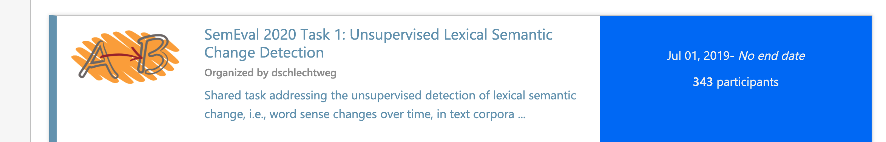

SemEval-2022 Task 7: Identifying plausible clarifications of implicit and underspecified phrases in instructional texts.
The goal of this shared task is to evaluate the ability of NLP systems to distinguish between plausible and implausible clarifications of an instruction.
TODO: add more background. Why is this task important?

Task set-up
Systems have to predict how well each filler fits in a given context.
- Classification: predict the label (implausible/not-sure/plausible) given the clarification. Submitted systems will be evaluated using the accuracy score.
- Ranking: predict the plausibility score on a scale from 1 to 5 given the clarification. Submitted systems will be evaluated using Spearman's ranked correlation.